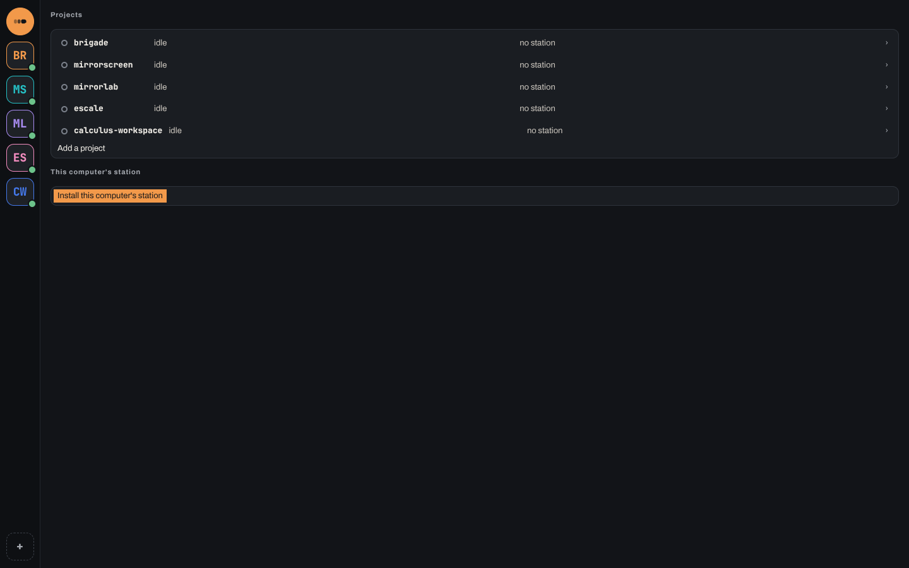
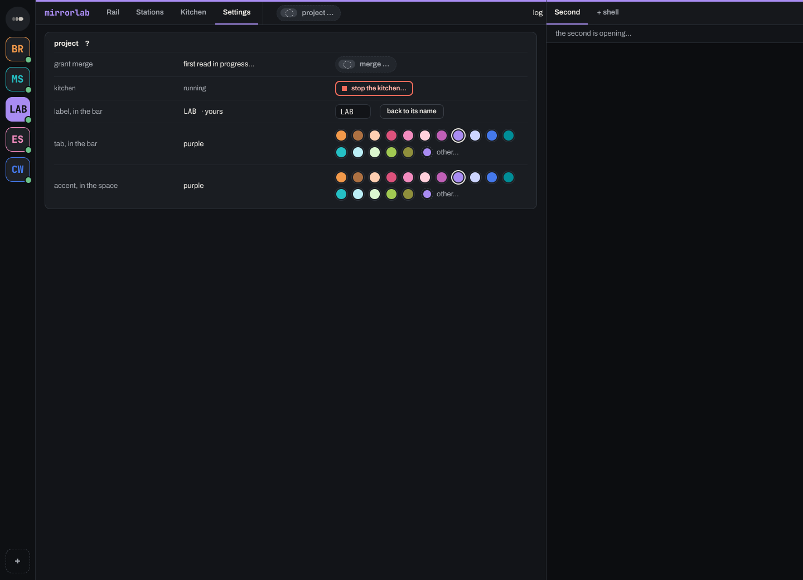
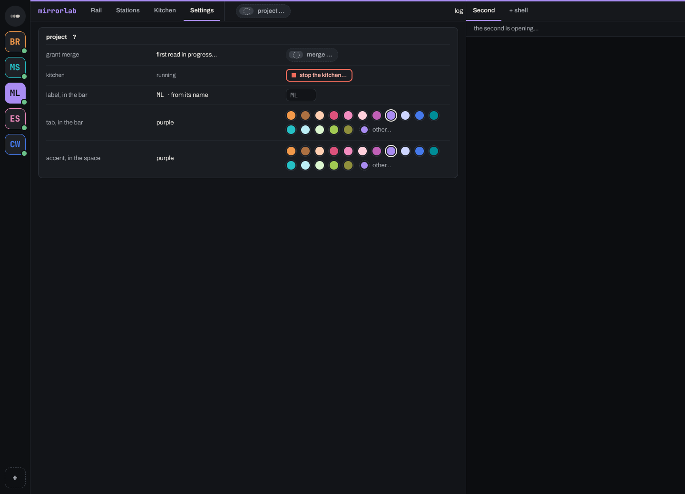
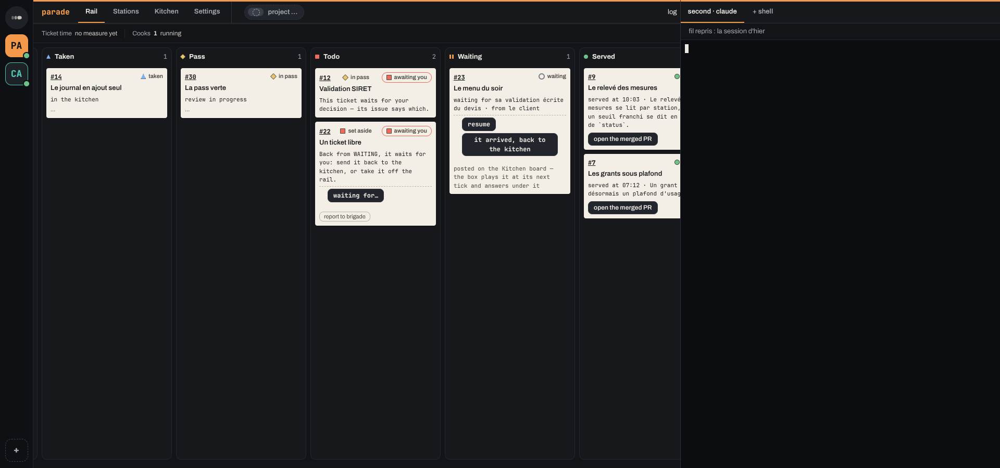
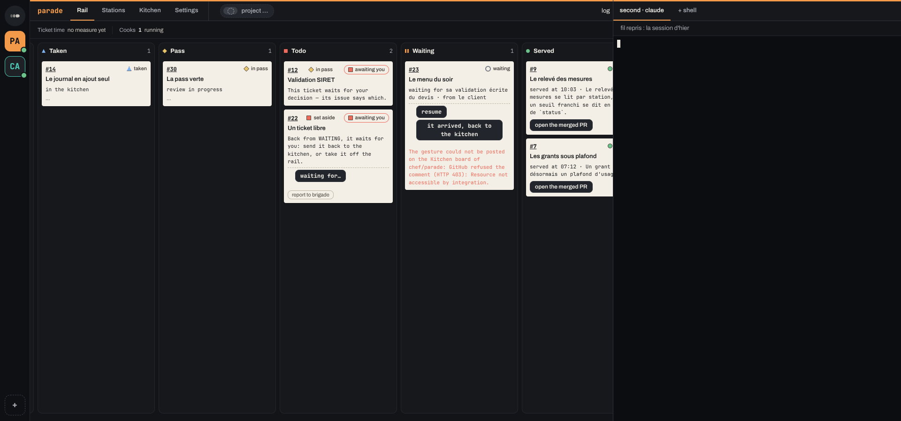
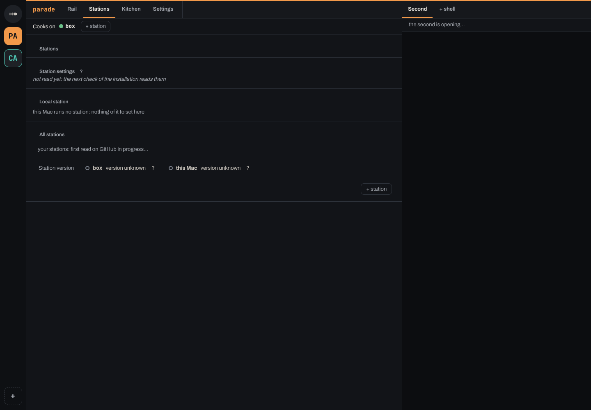
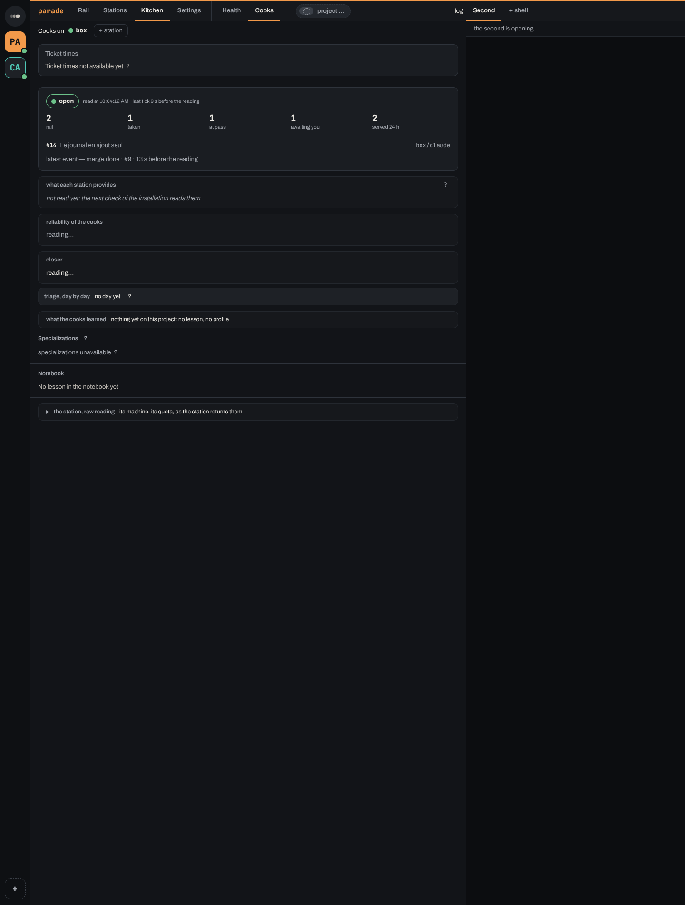

Screen inventory — contact sheet
26 states cannot be captured any more and 16 captures were removed because they do not show their state: see non-capturables.md.
122 screen states captured with scripts/capture-ecran/capture.ts, grouped by screen family.
Home (7)
Project space (32)
Rail (10)
Cards (23)

barre-des-projets

barre-sigle-ecrit

barre-sigle-reglage

carte-waiting-arrivee

carte-waiting-arrivee-echec

cooks-box-hors-fichier

cooks-cahier-vide
cooks-github-seul
cooks-github-stations
cooks-specialisation-ajout
cooks-specialisation-ajoutee
cooks-specialisations
cooks-station-appelee
cooks-stations-declarees-vide
parcours-en-echec
parcours-pret
parcours-sans-bac
second-choix
second-geste
second-geste-confirmation
second-outils-manquants
second-sans-dossier
second-sans-gh
Station (14)
ajout-station
ajout-station-sans-station
ajouter-station
ajouter-station-manque
demenager-choix
 demenager-sur-ce-mac
demenager-sur-ce-pc
onglet-stations
onglet-stations-ajout
stations-grises
stations-reglages
stations-station-locale
stations-station-locale-perdue
stations-version-inconnue
demenager-sur-ce-mac
demenager-sur-ce-pc
onglet-stations
onglet-stations-ajout
stations-grises
stations-reglages
stations-station-locale
stations-station-locale-perdue
stations-version-inconnue
Settings (3)
reglages-mac
reglages-pc
reglages-telephone
Add project (1)
Phone width (8)
demo-telephone-carte
demo-telephone-envoyee
telephone-connecte
telephone-connexion-code
telephone-connexion-refus
telephone-file
telephone-file-cooks
telephone-lancement
First launch (6)
premier-lancement
premier-lancement-clonage
premier-lancement-code
premier-lancement-connexion
premier-lancement-echec
premier-lancement-indisponible
Updates (12)
 mise-a-jour-disponible-mac
mise-a-jour-disponible-pc
mise-a-jour-erreur-mac
mise-a-jour-disponible-mac
mise-a-jour-disponible-pc
mise-a-jour-erreur-mac
 mise-a-jour-erreur-pc
mise-a-jour-erreur-pc
 mise-a-jour-prete-mac
mise-a-jour-prete-mac
 mise-a-jour-prete-pc
mise-a-jour-prete-pc
 mise-a-jour-telechargement-mac
mise-a-jour-telechargement-pc
mise-a-jour-telechargement-mac
mise-a-jour-telechargement-pc
 mise-a-jour-verification-mac
mise-a-jour-verification-mac
 mise-a-jour-verification-pc
mise-a-jour-verification-pc
 nouvelle-version-mac
nouvelle-version-windows
nouvelle-version-mac
nouvelle-version-windows
Demo (6)
demo-cook-rail
demo-cook-reprise
demo-cook-stations
demo-pass-fiche
demo-rail-file
demo-second